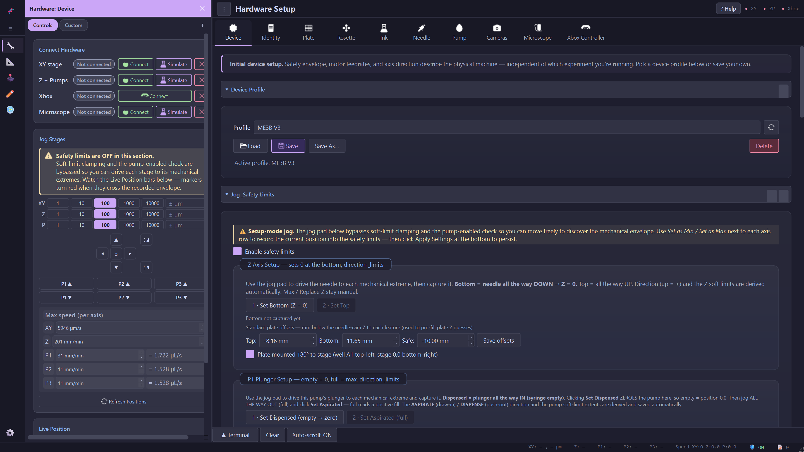
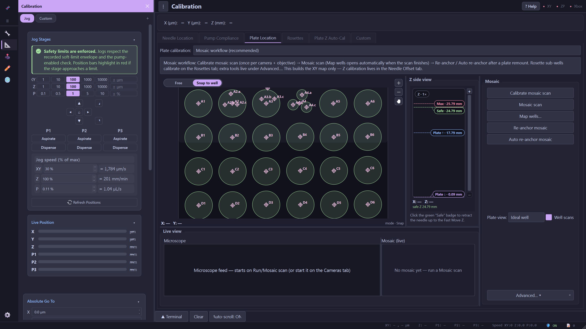
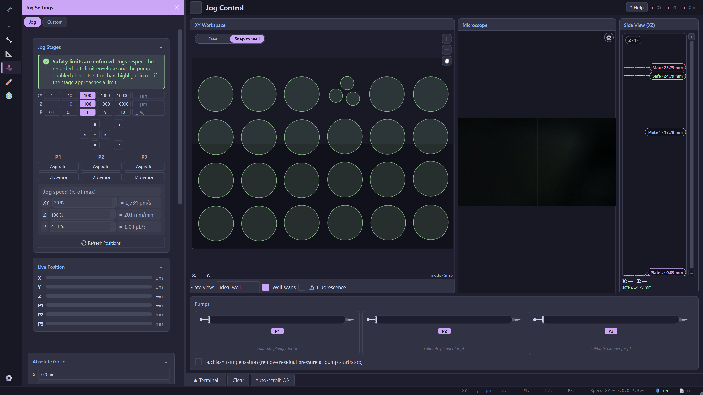
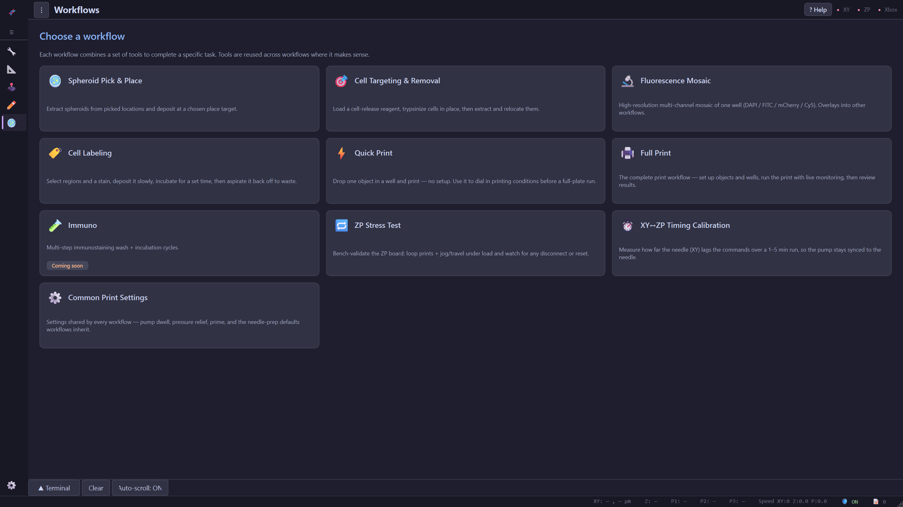
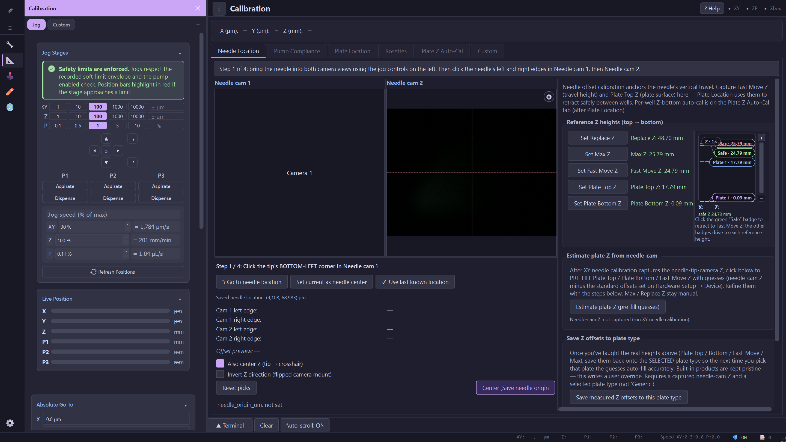

1
Hardware Setup
What machine do I have?
1
Ten sub-pages describe your machine. The order is
dependency order, not alphabetical — each
one's options are built from the ones to its left
(
Rosette → Ink → Needle → Pump).
2
Start here:
Connect Hardware.
Connect talks to the real device;
Simulate stands in for it so you can work with no
hardware attached — every row but Xbox offers both.
3
Read this one. The Device jog pad
bypasses the soft limits on purpose, so you
can find the mechanical extremes — which also means nothing will
stop you here.

2
Calibration
Where is everything?
1
The tab order encodes real dependencies.
Plate Location retracts to the Safe Z between
wells, so Safe Z must already exist — that is why the reference Z
heights live on
Needle Location, before it.
2
The recommended path, top to bottom:
Calibrate mosaic scan once per camera and
objective, then
Mosaic scan — Map wells opens
by itself when it finishes.
3
Click the green
Safe badge any time to retract
the needle to the Fast Move Z before it travels.

3
Jog Control
Move it by hand.
1
This is live state, not a control panel — the one thing you
do here is
click the plate to travel
there. It
snaps to wells unless you switch the
toggle to Free.
2
The side view is your needle height. The
Max,
Safe and
Plate badges are clickable — that is the
quickest way to retract.
3
All three syringes, live. They read
calibrate plunger for µL until you run the
plunger setup on Hardware Setup → Pump.

1
Start with
Quick Print — one object, one well,
no setup. It is how you dial in printing conditions before
committing a whole plate.
2
Then
Full Print: objects and wells, the run
with live monitoring, and the results review — the complete job.

★
The part people miss: this panel
follows you. That
is the same jog panel you just saw on Jog Control — here it is again
on
Calibration, and it appears inside every
jog-capable workflow too.
★
Two views, one panel: the first pill is the page's built-in set, and
Custom is the one you compose yourself.